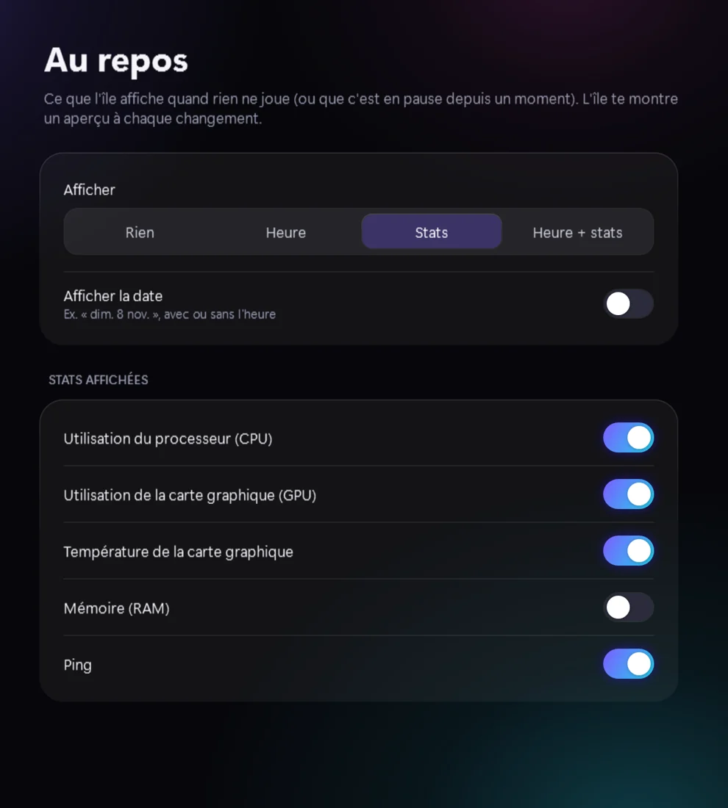
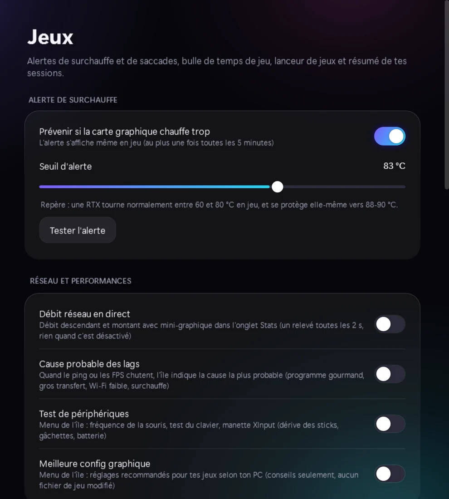

<title>Dynamic Island pour Windows</title>
<meta name="claude:viewport-fit-sides" content="cover">
<link rel="preconnect" href="https://fonts.googleapis.com">
<link rel="stylesheet" href="https://fonts.googleapis.com/css2?family=Inter:wght@300;400;500;600;700;800;900&display=swap">
<script src="https://cdn.tailwindcss.com/3.4.17"></script>
<script>
tailwind.config = { theme: { extend: { fontFamily: { sans: ['Inter', 'SF Pro Display', 'system-ui', 'sans-serif'] } } } };
</script>
<style>
/* Mise en page : une colonne centrée, très aérée ; un seul moment fort par écran. */
:root {
  color-scheme: dark;
  --bg: #000000;
  --fg: #F5F5F7;
  --muted: #86868B;
  --line: rgba(255,255,255,.10);
  --violet: #7C5CFF;
  --cyan: #22D3EE;
  --pink: #FF4FD8;
  --ease-out: cubic-bezier(.16, 1, .3, 1);
}
html { background: var(--bg); }
body {
  background: var(--bg); color: var(--fg);
  font-family: 'Inter', 'SF Pro Display', system-ui, sans-serif;
  -webkit-font-smoothing: antialiased; overflow-x: hidden;
}
body::before { content: ""; position: fixed; inset: 0 0 auto; height: env(safe-area-inset-top, 0px); z-index: 60; background: var(--bg); }
.gutter { padding-left: max(16px, env(safe-area-inset-left, 0px)); padding-right: max(16px, env(safe-area-inset-right, 0px)); }
h1, h2, h3 { text-wrap: balance; letter-spacing: -0.045em; }
.grad { background: linear-gradient(100deg, var(--violet), var(--cyan) 55%, var(--pink)); -webkit-background-clip: text; background-clip: text; color: transparent; }
.muted { color: var(--muted); }

/* Lenis */
html.lenis, html.lenis body { height: auto; }
.lenis.lenis-smooth { scroll-behavior: auto !important; }

/* Nav flottante en verre */
.nav {
  position: fixed; top: calc(env(safe-area-inset-top, 0px) + 14px); left: 50%; transform: translateX(-50%);
  z-index: 50; width: min(760px, calc(100% - 32px));
  background: rgba(22,22,26,.55); border: 1px solid var(--line);
  backdrop-filter: blur(20px) saturate(160%); -webkit-backdrop-filter: blur(20px) saturate(160%);
  border-radius: 999px; box-shadow: 0 10px 40px rgba(0,0,0,.5), inset 0 1px 0 rgba(255,255,255,.08);
}
.nav a:focus-visible, .btn:focus-visible { outline: 2px solid var(--cyan); outline-offset: 3px; }
.btn {
  display: inline-flex; align-items: center; gap: .5rem; border-radius: 999px; font-weight: 600;
  transition: transform .5s var(--ease-out), box-shadow .5s var(--ease-out), background .3s;
}
.btn:hover { transform: translateY(-2px); }
.btn-main { background: var(--fg); color: #000; }
.btn-main:hover { box-shadow: 0 10px 40px rgba(124,92,255,.45); }
.btn-ghost { border: 1px solid var(--line); color: var(--fg); }
.btn-ghost:hover { background: rgba(255,255,255,.06); }

/* Hero */
.word { display: inline-block; will-change: transform; }
.halo {
  position: absolute; inset: auto; width: 70vmin; height: 70vmin; border-radius: 50%;
  filter: blur(90px); opacity: .45; pointer-events: none;
}

/* Île de démonstration */
.island {
  background: #000; border-radius: 999px; box-shadow: 0 0 0 1px rgba(255,255,255,.07), 0 30px 80px rgba(0,0,0,.8);
  display: flex; align-items: center; gap: 14px; padding: 12px 18px 12px 12px; width: max-content; margin-inline: auto;
}
.cover { width: 44px; height: 44px; border-radius: 12px; background: linear-gradient(135deg, var(--pink), var(--violet) 60%, var(--cyan)); flex: none; }
.eq { display: flex; gap: 3px; align-items: flex-end; height: 18px; }
.eq i { width: 3px; border-radius: 2px; background: var(--cyan); animation: eq 1s var(--ease-out) infinite alternate; }
.eq i:nth-child(2) { animation-delay: .2s } .eq i:nth-child(3) { animation-delay: .4s } .eq i:nth-child(4) { animation-delay: .1s }
@keyframes eq { from { height: 4px } to { height: 18px } }

.frame {
  border-radius: 28px; overflow: hidden; border: 1px solid var(--line);
  box-shadow: 0 40px 120px rgba(124,92,255,.18), 0 0 0 1px rgba(255,255,255,.03);
  background: #0B0B0F; max-width: 100%;
}
.frame img { display: block; width: 100%; height: auto; }

/* Scrollytelling */
.story { position: relative; }
.story-inner { min-height: 100vh; display: grid; place-items: center; }
.steps { display: grid; gap: 4rem; }
html.js .steps { display: block; position: relative; height: 16rem; }
html.js .step { position: absolute; inset: 0; }
.step-index { font-variant-numeric: tabular-nums; }
.progress { height: 2px; background: var(--line); border-radius: 2px; overflow: hidden; }
.progress > span { display: block; height: 100%; width: 100%; transform-origin: left; transform: scaleX(0); background: linear-gradient(90deg, var(--violet), var(--cyan)); }

/* Bento */
.bento { display: grid; gap: 16px; grid-template-columns: 1fr; }
@media (min-width: 860px) {
  .bento { grid-template-columns: repeat(6, 1fr); grid-auto-rows: minmax(260px, auto); }
  .b1 { grid-column: span 4; grid-row: span 2; }
  .b2 { grid-column: span 2; }
  .b3 { grid-column: span 2; }
  .b4 { grid-column: span 6; }
}
.card {
  --x: 50%; --y: 50%; --o: 0;
  position: relative; border-radius: 28px; background: #0A0A0D; overflow: hidden; min-width: 0;
  isolation: isolate;
}
/* Bordure lumineuse qui suit la souris */
.card::before {
  content: ""; position: absolute; inset: 0; border-radius: inherit; padding: 1px; z-index: 2; pointer-events: none;
  background:
    radial-gradient(420px circle at var(--x) var(--y), rgba(34,211,238,calc(.9 * var(--o))), rgba(124,92,255,calc(.6 * var(--o))) 35%, transparent 65%),
    linear-gradient(var(--line), var(--line));
  -webkit-mask: linear-gradient(#000 0 0) content-box, linear-gradient(#000 0 0);
  -webkit-mask-composite: xor; mask-composite: exclude;
}
.card::after {
  content: ""; position: absolute; inset: 0; z-index: -1; pointer-events: none; opacity: var(--o);
  background: radial-gradient(600px circle at var(--x) var(--y), rgba(124,92,255,.10), transparent 60%);
  transition: opacity .4s var(--ease-out);
}
.card img { display: block; max-width: 100%; height: auto; }
.chip { font-size: 12px; letter-spacing: .08em; text-transform: uppercase; color: var(--muted); }
.stat { font-variant-numeric: tabular-nums; }

@media (prefers-reduced-motion: reduce) {
  *, *::before, *::after { animation: none !important; transition: none !important; }
}
</style>

<!-- Navigation -->
<nav class="nav" aria-label="Navigation principale">
  <div class="flex items-center justify-between gap-3 py-2 pl-5 pr-2">
    <a href="#top" class="flex items-center gap-2 font-semibold tracking-tight">
      <span class="inline-block h-3 w-7 rounded-full" style="background:linear-gradient(90deg,var(--violet),var(--cyan))"></span>
      Dynamic Island
    </a>
    <div class="hidden items-center gap-6 text-sm muted md:flex">
      <a href="#story" class="hover:text-white transition-colors">L'île</a>
      <a href="#features" class="hover:text-white transition-colors">Fonctions</a>
      <a href="#cta" class="hover:text-white transition-colors">Tarifs</a>
    </div>
    <a class="btn btn-main px-4 py-2 text-sm" href="https://github.com/sonlikehisfather/dynamic-island-releases/releases/latest/download/DynamicIsland-win-Setup.exe">Télécharger</a>
  </div>
</nav>

<main id="top">
  <!-- Hero -->
  <section class="hero gutter relative flex flex-col items-center overflow-hidden pt-40 pb-24 text-center md:pt-48">
    <div class="halo" style="background:var(--violet); top:-10%; left:10%"></div>
    <div class="halo" style="background:var(--cyan); top:20%; right:5%; opacity:.25"></div>

    <p class="hero-kicker chip mb-6">Pour Windows 10 et 11</p>
    <h1 class="hero-title max-w-5xl text-[clamp(3rem,10vw,8.5rem)] font-extrabold leading-[.92]">
      <span class="word">L'île</span> <span class="word">qui</span> <span class="word">vit</span><br>
      <span class="word grad">en&nbsp;haut</span> <span class="word grad">de&nbsp;ton&nbsp;écran.</span>
    </h1>
    <p class="hero-sub muted mt-8 max-w-xl text-lg leading-relaxed md:text-xl">
      Musique, notifications, stats, captures et replay dans une pilule qui s'ouvre quand tu en as besoin et disparaît le reste du temps.
    </p>
    <div class="hero-cta mt-10 flex flex-wrap justify-center gap-3">
      <a class="btn btn-main px-7 py-3.5" href="https://github.com/sonlikehisfather/dynamic-island-releases/releases/latest/download/DynamicIsland-win-Setup.exe">Essayer 7 jours gratuits</a>
      <a class="btn btn-ghost px-7 py-3.5" href="#story">Voir comment ça marche</a>
    </div>

    <!-- Visuel central -->
    <div class="hero-visual relative mt-20 w-full max-w-5xl">
      <div class="island relative z-10 -mb-8">
        <div class="cover"></div>
        <div class="text-left">
          <div class="text-sm font-semibold">Sur Paname</div>
          <div class="text-xs muted">PNL</div>
        </div>
        <div class="eq ml-6" aria-hidden="true"><i></i><i></i><i></i><i></i></div>
      </div>
      <div class="frame">
        
      </div>
    </div>
  </section>

  <!-- Scrollytelling -->
  <section id="story" class="story gutter">
    <div class="story-inner">
      <div class="mx-auto grid w-full max-w-6xl items-center gap-12 md:grid-cols-2">
        <div>
          <p class="chip mb-6">Comment ça marche</p>
          <div class="steps">
            <div class="step">
              <p class="step-index muted mb-3 text-sm">01 / 03</p>
              <h2 class="text-[clamp(2.2rem,5vw,4rem)] font-bold leading-[1]">Elle se fait <span class="grad">oublier.</span></h2>
              <p class="muted mt-5 max-w-md text-lg leading-relaxed">Au repos, une petite pilule noire. Heure, stats ou rien du tout : tu choisis.</p>
            </div>
            <div class="step">
              <p class="step-index muted mb-3 text-sm">02 / 03</p>
              <h2 class="text-[clamp(2.2rem,5vw,4rem)] font-bold leading-[1]">Elle s'ouvre <span class="grad">au bon moment.</span></h2>
              <p class="muted mt-5 max-w-md text-lg leading-relaxed">Un morceau change, un message arrive, ton chargeur se branche : l'île s'anime, te montre l'info, puis se range.</p>
            </div>
            <div class="step">
              <p class="step-index muted mb-3 text-sm">03 / 03</p>
              <h2 class="text-[clamp(2.2rem,5vw,4rem)] font-bold leading-[1]">Elle reste <span class="grad">légère.</span></h2>
              <p class="muted mt-5 max-w-md text-lg leading-relaxed">Environ 150 Mo de mémoire, aucune pub, et un mode jeu qui la met en veille quand tu joues.</p>
            </div>
          </div>
          <div class="progress mt-10 max-w-md"><span></span></div>
        </div>
        <div class="frame story-frame">
          
        </div>
      </div>
    </div>
  </section>

  <!-- Bento -->
  <section id="features" class="gutter py-32">
    <div class="mx-auto max-w-6xl">
      <h2 class="reveal max-w-3xl text-[clamp(2.4rem,6vw,5rem)] font-bold leading-[.95]">Tout ce qu'il te faut.<br><span class="muted">Au même endroit.</span></h2>

      <div class="bento mt-16">
        <article class="card b1 reveal flex flex-col p-8">
          <span class="chip">Jeux</span>
          <h3 class="mt-3 text-3xl font-bold md:text-4xl">Overlay, réticule et replay.</h3>
          <p class="muted mt-3 max-w-md">FPS, CPU, GPU et ping par-dessus tes jeux. Enregistre les 30 dernières secondes d'un raccourci.</p>
          <div class="mt-auto pt-8"><div class="frame"></div></div>
        </article>
        <article class="card b2 reveal flex flex-col p-8">
          <span class="chip">Stats</span>
          <div class="mt-auto">
            <div class="stat text-6xl font-extrabold tracking-tight"><span data-count="34">34</span><span class="muted text-3xl"> %</span></div>
            <p class="muted mt-2">CPU en direct, sans ouvrir le gestionnaire des tâches.</p>
          </div>
        </article>
        <article class="card b3 reveal flex flex-col p-8">
          <span class="chip">Assistant IA</span>
          <p class="mt-auto text-2xl font-semibold leading-snug">« Mets-moi un minuteur de 25 minutes et coupe les notifs. »</p>
          <p class="muted mt-3 text-sm">Ctrl + Maj + Espace</p>
        </article>
        <article class="card b4 reveal grid items-center gap-8 p-8 md:grid-cols-2">
          <div>
            <span class="chip">Optimiseur</span>
            <h3 class="mt-3 text-3xl font-bold md:text-4xl">Un PC plus rapide en un clic.</h3>
            <p class="muted mt-3 max-w-md">Il analyse ce qui ralentit ta machine, te l'explique simplement et peut tout annuler.</p>
          </div>
          <div class="frame"></div>
        </article>
      </div>
    </div>
  </section>

  <!-- CTA -->
  <section id="cta" class="gutter pb-40 pt-10 text-center">
    <h2 class="reveal mx-auto max-w-4xl text-[clamp(2.6rem,8vw,6.5rem)] font-extrabold leading-[.92]">Essaie-la <span class="grad">sept jours.</span></h2>
    <p class="reveal muted mx-auto mt-6 max-w-lg text-lg">Gratuit, sans carte bancaire. Ensuite 8 € pour un an, 15 € à vie, ou 29 € pour toute la famille.</p>
    <div class="reveal mt-10 flex justify-center">
      <a class="btn btn-main px-8 py-4 text-lg" href="https://github.com/sonlikehisfather/dynamic-island-releases/releases/latest/download/DynamicIsland-win-Setup.exe">Télécharger pour Windows</a>
    </div>
    <p class="muted mt-6 text-sm">Windows 10 (2004+) et Windows 11</p>
  </section>
</main>

<footer class="gutter border-t py-10 text-sm muted" style="border-color:var(--line)">
  <div class="mx-auto flex max-w-6xl flex-wrap items-center justify-between gap-4">
    <span>© 2026 sonlikehisfather</span>
    <div class="flex gap-5">
      <a class="hover:text-white" href="https://github.com/sonlikehisfather">GitHub</a>
      <a class="hover:text-white" href="https://discord.com/users/1456994725566353485">Discord</a>
    </div>
  </div>
</footer>

<script src="https://cdnjs.cloudflare.com/ajax/libs/gsap/3.12.5/gsap.min.js"></script>
<script src="https://cdnjs.cloudflare.com/ajax/libs/gsap/3.12.5/ScrollTrigger.min.js"></script>
<script src="https://cdn.jsdelivr.net/npm/lenis@1.1.13/dist/lenis.min.js"></script>
<script>
(() => {
  const reduce = matchMedia('(prefers-reduced-motion: reduce)').matches;

  // Bordure lumineuse des cartes (marche même sans GSAP)
  document.querySelectorAll('.card').forEach(c => {
    c.addEventListener('pointermove', e => {
      const r = c.getBoundingClientRect();
      c.style.setProperty('--x', (e.clientX - r.left) + 'px');
      c.style.setProperty('--y', (e.clientY - r.top) + 'px');
      c.style.setProperty('--o', 1);
    });
    c.addEventListener('pointerleave', () => c.style.setProperty('--o', 0));
  });

  if (reduce || !window.gsap || !window.ScrollTrigger) return;
  document.documentElement.classList.add('js');
  gsap.registerPlugin(ScrollTrigger);

  // Smooth scroll
  if (window.Lenis) {
    const lenis = new Lenis({ duration: 1.15, easing: t => 1 - Math.pow(1 - t, 4), smoothWheel: true });
    lenis.on('scroll', ScrollTrigger.update);
    gsap.ticker.add(t => lenis.raf(t * 1000));
    gsap.ticker.lagSmoothing(0);
    document.querySelectorAll('a[href^="#"]').forEach(a => a.addEventListener('click', e => {
      const t = document.querySelector(a.getAttribute('href'));
      if (t) { e.preventDefault(); lenis.scrollTo(t, { offset: -20 }); }
    }));
  }

  const EXPO = 'expo.out';

  // 1. Hero : titre cinétique
  gsap.timeline({ defaults: { ease: EXPO } })
    .from('.hero-kicker', { y: 20, opacity: 0, duration: 1 })
    .from('.hero-title .word', { yPercent: 110, rotate: 4, opacity: 0, duration: 1.4, stagger: .08 }, '-=.7')
    .from('.hero-sub', { y: 24, opacity: 0, duration: 1.2 }, '-=1')
    .from('.hero-cta > *', { y: 20, opacity: 0, duration: 1, stagger: .08 }, '-=1')
    .from('.hero-visual', { y: 80, opacity: 0, scale: .94, duration: 1.6 }, '-=.9')
    .from('.island', { width: 120, duration: 1.2, ease: 'elastic.out(1, .7)', clearProps: 'width' }, '-=1.1');

  // Visuel qui zoome légèrement au scroll
  gsap.to('.hero-visual', {
    scale: 1.08, y: -40, ease: 'none',
    scrollTrigger: { trigger: '.hero-visual', start: 'top 80%', end: 'bottom top', scrub: 1.2 }
  });
  gsap.to('.halo', { yPercent: 40, ease: 'none', scrollTrigger: { trigger: '.hero', start: 'top top', end: 'bottom top', scrub: true } });

  // 2. Scrollytelling épinglé
  const steps = gsap.utils.toArray('.step');
  const imgs = ['assets/img/app-repos.webp', 'assets/img/app-notifications.webp', 'assets/img/app-stats.webp'];
  const storyImg = document.querySelector('.story-frame img');
  imgs.forEach(s => { const i = new Image(); i.src = s; });
  gsap.set(steps.slice(1), { opacity: 0, y: 40 });

  const tl = gsap.timeline({
    scrollTrigger: {
      trigger: '.story', start: 'top top', end: '+=' + (steps.length * 90) + '%',
      pin: '.story-inner', scrub: 1,
      onUpdate: self => {
        const i = Math.min(steps.length - 1, Math.floor(self.progress * steps.length));
        if (storyImg.dataset.i != i) { storyImg.dataset.i = i; storyImg.src = imgs[i]; }
      }
    }
  });
  tl.to('.progress > span', { scaleX: 1, ease: 'none', duration: steps.length }, 0);
  steps.forEach((s, i) => {
    if (i === 0) return;
    tl.to(steps[i - 1], { opacity: 0, y: -40, duration: .4, ease: 'power3.in' }, i - .3)
      .to(s, { opacity: 1, y: 0, duration: .5, ease: 'power3.out' }, i - .05);
  });
  gsap.from('.story-frame', { scale: .9, opacity: 0, ease: EXPO, duration: 1.4,
    scrollTrigger: { trigger: '.story', start: 'top 70%' } });

  // 3. Apparitions (bento, titres)
  gsap.utils.toArray('.reveal').forEach(el => {
    gsap.from(el, { y: 60, opacity: 0, duration: 1.3, ease: EXPO,
      scrollTrigger: { trigger: el, start: 'top 88%' } });
  });

  // Compteur
  document.querySelectorAll('[data-count]').forEach(el => {
    const o = { v: 0 };
    gsap.to(o, { v: +el.dataset.count, duration: 2, ease: 'power2.out',
      scrollTrigger: { trigger: el, start: 'top 90%' },
      onUpdate: () => el.textContent = Math.round(o.v) });
  });
})();
</script>
